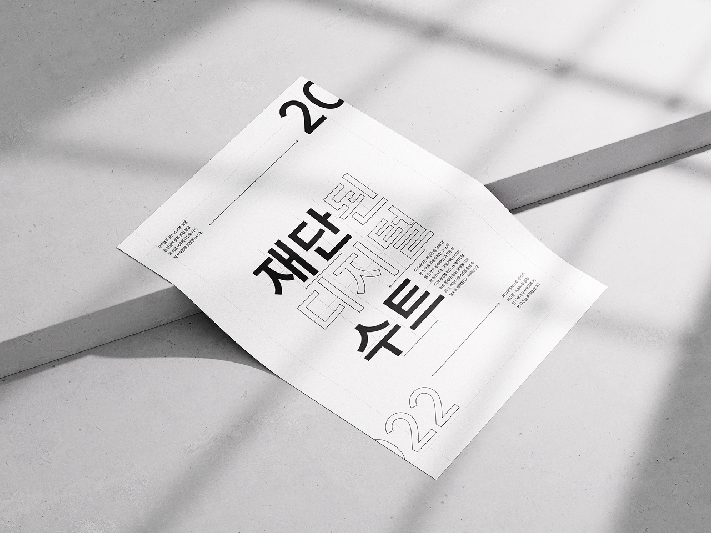
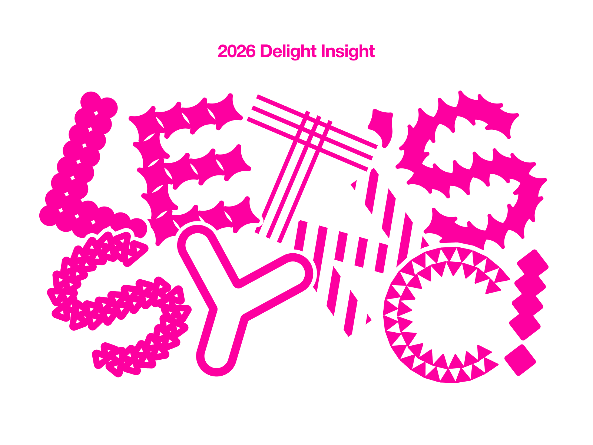
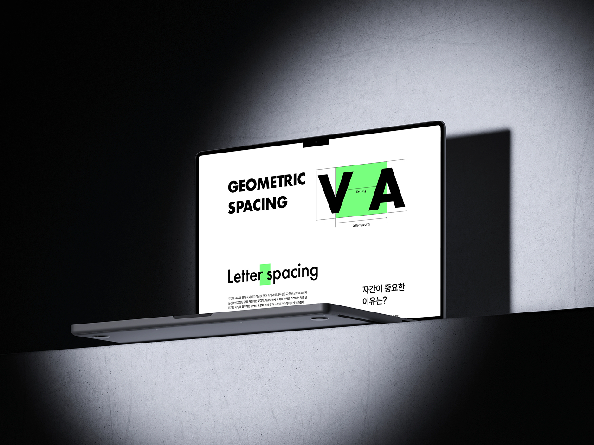
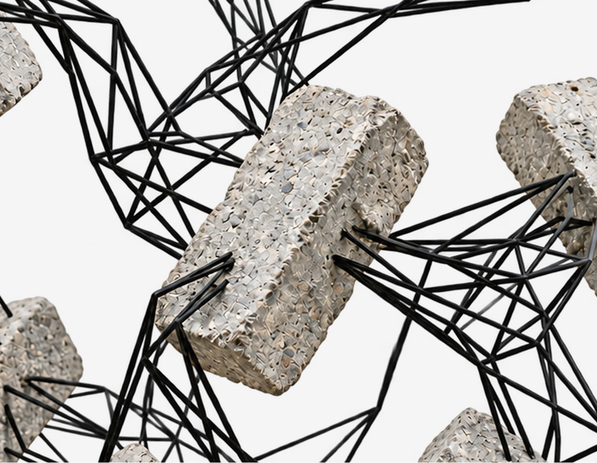
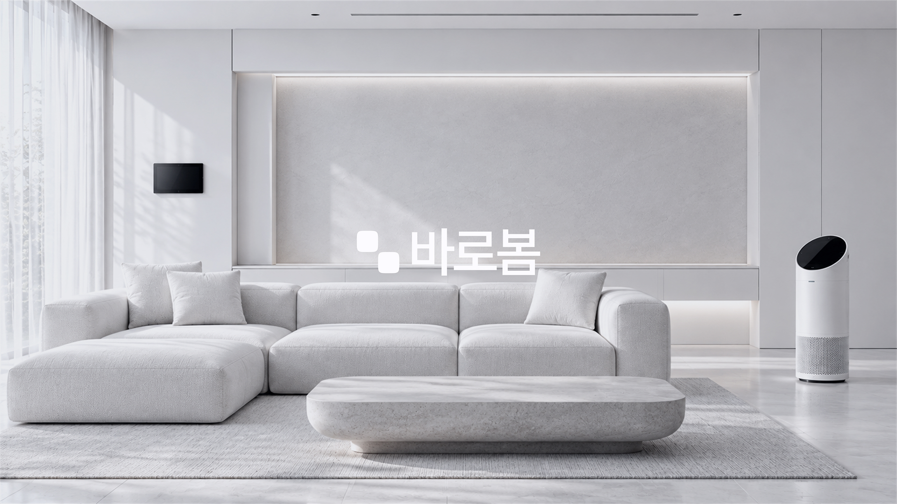
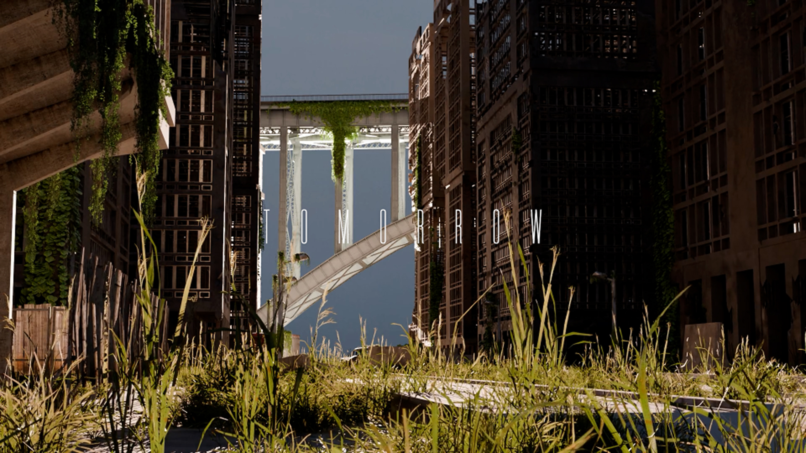
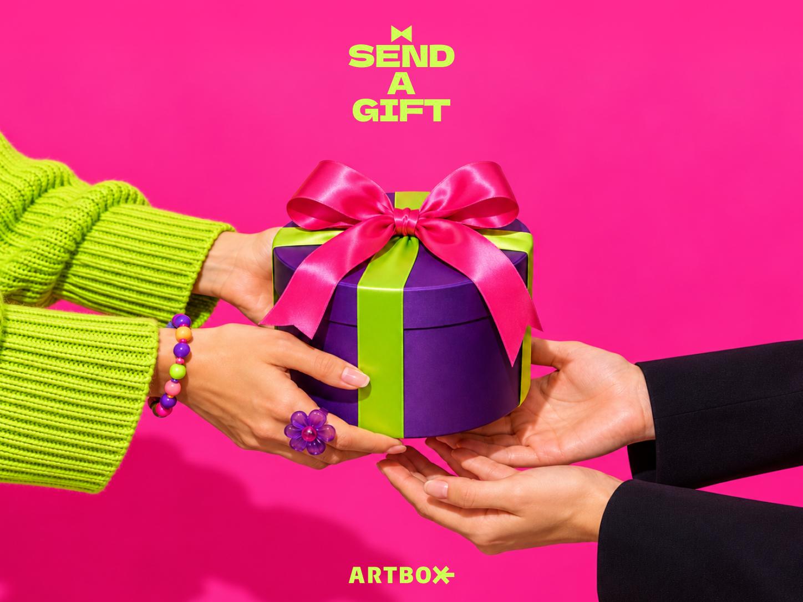
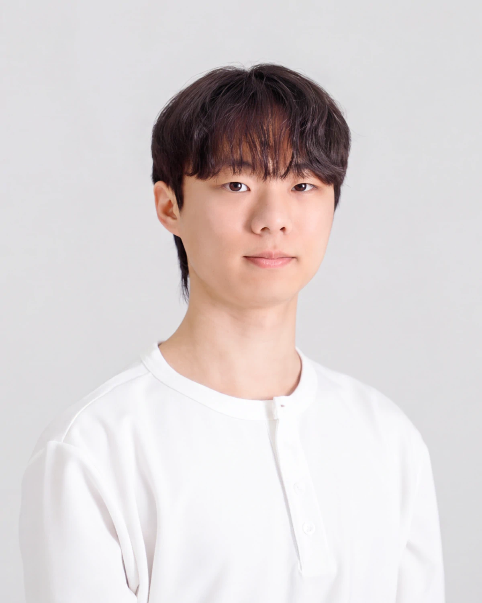

BloomingDesigner
LEE SEUNGYEON
- UI/UX
- BX
- Motion Graphic

image
안녕하세요! 개화하는 디자이너 이승연입니다. 다양한 디자인의 표현과 원리를 탐색하고 적용하면서 하나의 아름다운 꽃을 피어내고자 합니다.
Hello!, I’m a Blooming Designer Seungyeon Lee. By exploring and applying different forms of expression and principles of design, I hope to create something beautiful.
- Education
홍익디자인고등학교 졸업
계원예술대학교 졸업
- Awards
제 32회 커뮤니케이션 국제 어워드 입선
제 33회 계원조형예술제 학과 최우수상 & 공로상
- Campus Activities
2025년 디지털미디어디자인과 졸업 전시회 오프닝팀 참여
2026년 1학기 멘토링제 멘토 참여
2026년 디지털미디어디자인과 졸업 전시회 브랜딩팀 참여
2026년 2학기 멘토링제 멘토 참여
- Experiences
Another Interaction 전시 참여